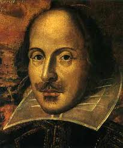

Hashing- and Sorting-out Shakespeare

Overview
There are two parts: Part I: build a concordance (see below) from a
"word sample" (some literary sample like the bible, poems or editorials)
and give it an interactive interface.
Use a hash table.
In that building process, it is easy to keep a count of total words
and
number of different words in the sample. Those numbers you will use
to verify or falsify a linguistic hypothesis.
Part II: uses tools from Part I, along with a
sort and a merge you write, to identify words used in Shakespeare but not found
in a sample of modern English. The goal is to find Elizabethan words
no longer used today (maybe like 'varlet').
Part I Motivation: The Hypothesis
It has been estimated that the average Elizabethan city-dweller,
circa 1600, had a working vocabulary at least three times
larger than the average American today. (They had great insults too,
or at least Shakespeare did: ``Thou beslubbering hedge-born
clotpole'',
``mewling milk-livered joithead'', etc.) The argument is that
popular culture then was Shakespeare, and now it's TV, tweets from
illiterates like ourselves, and 3rd-grade level Presidential Debates.
Speaking of insults, the above 'estimate' is a pretty uncomplimentary
hypothesis about the linguistic prowess of
own great nation. It begs for investigation, so let's state a
testable, simple hypothesis: Shakespeare's sonnets use a wider
variety of (less repetition of) vocabulary than modern prose.
(Related question: "...than modern poetry"?).
Formalize that as: Let SS be the list of (all) words in the Shakespeare
Sample (for us, the sonnets).
Let ES be the list of all words in the English sample (see below). Let SD be the set of
(different) words in the Shakespeare sample -- no duplicated words.
Let ED be the
set of different words in the English sample.
Part I starts the quantification process by building a concordance,
or list of words, in the word samples. The concordance is an
interesting,
useful, free-standing tool in itself, so you'll give it a
(dirt simple!) user interface. As your program makes the
concordance from a word sample, it can easily make total- and
different-word counts.
Then the hypothesis is that ( |SD| / |SS| ) > ( |ED| / |ES|), where |X|
means
"number of elements in list or set X." A good single number to report
would be ( |SD| / |SS| ) / ( |ED| / |ES|), which the hypothesis claims
should be > 1 and maybe as large as 3. What do you find and are you
convinced?
Concordances
A concordance is an index that tells, for all words in a particular
document, where each one appears. Biblical concordances have been
central scholarly aids for a long time:
they identify the book and verse in which any word
appears (also giving some context and pointing to its Greek or Hebrew
form and definition). Useful if you're looking for a quote,
cross-reference, seeing how many different Hebrew words mapped into
one
English one, etc.
Part I: Building a Concordance
Let's build a concordance of Shakespeare's sonnets, using a hash
table that you write (not just use, but design and execute yourself).
Some thoughts on details are given below.
The words from the sonnets
are hashed into the table, and each entry has the word and a list of
its locations (each is the sonnet number and line where it's found).
The number of different words
(those newly inserted, not already appearing in the table) is counted
during the insertion phase.
Then we'll want
an interface method that invites the user to type a word, and
which will produce all the locations in the input data file where that
word is found. Pure text display is fine, or use a GUI I/O tool if
that floats your boat.
Input Data for Concordance and Hypothesis Test
The sonnets are from the
Project Gutenberg site. They and other data are in the course's
Data Directory.
The sonnets file
sonnets.txt file is the raw input for use in Part I.
Relevant for Part II of
this assignment are the files words.zip,
agid_words.tar.gz -- they are ASCII (TXT) English word
collections (lexicons, dictionaries...).
For the sonnets, edit out the copyright and legal stuff and you've got
about 2630 lines and 17700 words. I removed CTRL-M's as well. The
resulting file is the required final input to your concordance (of
course
you'll use smaller but similarly formatted input for debugging, yes?).
Your Choice: Specifying the General Hypothesis:
Now to test the Part I hypothesis you get to pick
your own control input:
some category of English (USA) prose
to explore (newspaper stories, short stories, blogs, advertising,...).
It's probably easy to find or make ASCII versions of newspapers,
political blogs, Stephen King novels, on-line self-published novels,
whatever. Have fun:
find it, justify it (why is it representative of
the community whose vocabulary you're testing?).
Edit it into the same format as the
sonnets, and adjust its length to have the same number of words as the sonnets.
(UNIX's wc tells you relevant file size info, as will most any text
editor).
Part I Recap: Concordance and Hypothesis
Make an interactive user interface for the concordance. Could use a
window
or be command-line interaction -- latter is easier to "turn in" via a transcript.
Thus provide a transcript of your user interface (or screenshots or
something convincing if you've got a more modern interface with
windows).
Document a user inquiring about
words and receiving information about their locations. It should
be obvious to the reader of your transscript what is going on, but feel free to add
explanations, point out cool features, whatever.
To test the hypothesis, you can use your
concordance
program to count the number of different words
it sees. Thus simply need to make a concordance for the sonnets (done
already?) and another
one for
the control prose. Now you are ready to compute and report the ratios
mentioned above in the formalization of the hypothesis.
Part I: Implementation Requirements and First Thoughts
Use a closed hashing scheme. Use quadratic probing or double hashing
to resolve collisions. Case and punctuation should both be ignored --
they must not enter into your hash function, and your word-matching
must
be case-insensitive. So for definiteness, case must be 'lower', and
all punctuation except for spaces and line breaks ignored (except as
noted below).
The concordance program can easily count the number of different words
it sees (increment a counter whenever a word is inserted into the hash
table for the first time).
The thoughts below are offered ``as is'', no guarantees. Feel free to
ignore the rest of
this section. As always, start small (one sonnet or less). Scaling
up a working algorithm is easier than debugging a massive
data-processing
job with all its input and state and output. Sonnets are separated by
blank lines and roman numerals, so should be easy to identify, and the
roman numeral string is their title. Break each line of text into
words and deal with one word at a time. Ignore (remove) all
punctuation after, before, or within a word. Eg. in Sonnet II we
have "lies,", "'This", and "deserv'd", which go to "lies", "This", and
"deservd". Then put everything into lower case, so words will compare
equal
with a simple string compare and, more importantly, hash to the same
value.
We could have a word class, whose instances each contain a word
as a string and the head of a linked list of reference class
instances. The reference class contains the sonnet title (its roman
numeral number), the sonnet's line number where the word appears (an
integer), and a pointer to the next reference instance.
So one way the algorithm could work: go word by word (one could also
go line by line or sonnet by sonnet, mutatis mutandis).
For each word, make a word instance and a single reference instance
and fill them
up
with the appropriate strings and integers. Hash the word (your choice
of hash function), and do what it takes to see if it's in your table
(choice of quadratic or double hashing).
If it's not there already, make the reference the
1-long reference
list for that word and insert the word into the table. If the word
is in the table already, insert
the new reference instance into the existing reference list for the word in the
table.
Part II: Forensic Text Analysis and Elizabethanism Detection
The goal here is to detect words in the sonnets that don't appear in
modern English, thus presumably were used in Elizabethan times but
not today.
Check out the word lists (lexicons) in the
data directory. One problem with a dictionary
is that linguistically 1600 wasn't long ago, and furthermore
old words get remembered in
dictionaries (partly so we can read stuff written in 1600!).
Still, you can pick a lexicon or find another source of words
you like better. Idea is to have the broadest coverage of modern
English, but few "old" words from classical sources. This might be
a tough goal, I don't know. Maybe
you can find (or make, using your concordance tool) a
lexicon of all the words used in some issues of the N.Y. Times or Wall
St. Journal, maybe.
Our job is to find which words are in the sonnets but not in our
(ideally, modern American) lexicon. Simply sort the sonnet words
(and if you need to, the words in the lexicon).
Depending on the form of your lexicon, you may want to leave the
sonnets'
internal
punctuation alone ("who've" would be OK), OR you may want to alter the
lexicon to make its words comparable with the sonnets'. Use your
choice of O(nlogn) methods: quicksort, shellsort,
heapsort, or
mergesort.
Now we're not going to use a hash table here (home-brewed or in a
library).
Except that one way to make a lexicon from a big bag of words like chapters from
some
book from Gutenberg, is to hash all the words in the sample, then
dump the words out of the hash table and sort them. Else you can
sort first and remove duplicates in O(N) in a 2nd pass.
So the hard part of Part II is to get two comparable sorted lists
(LS: words from sonnets and LE: words from English sample).
Our goal (now easy) is to see if LS has words LE does not. The natural way
to compare is during a
merge -- if that isn't obvious then get help fast.
We need a merge routine here, so that maybe suggests a mergesort for your sorting
method.
If a sonnet
word isn't in the lexicon, write it to a file to be included in your
submission. The hope would be you've found an Elizabethanism, perhaps
like
"moldwarp".
Remember to debug your sort and merge on small inputs.
What to Hand In
1. Code file.
2. Readme, which should have the justification for your control
prose for the concordance and word-counting experiment, as well
as the result (how many different words in each sample).
3. Readme should also have any necessary instructions for running the
code,
and a convincing transcript of a user's
interaction with your on-line concordance of Shakespeare's Sonnets.
4. Readme should also describe your sorting algorithm and hash
function, as well as any novel or clever or extra functionality you provide.
5. File of Elizabethanisms found in the sonnets.

Last update: 7/29/2013